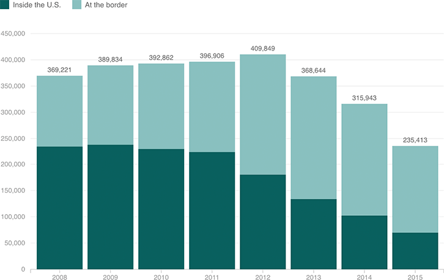

Deportations Rose During The First Half Of Obama’s Administration, But Have Declined In Recent Years
In that time, the balance has shifted from people already in the country to people entering at the border.

Note:
Years shown are fiscal years.